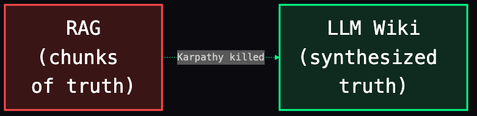
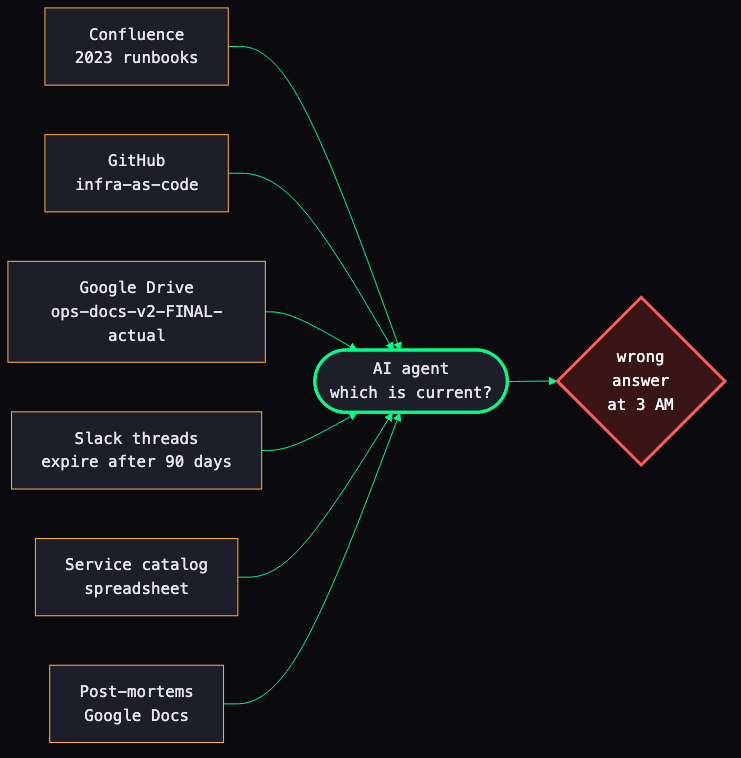
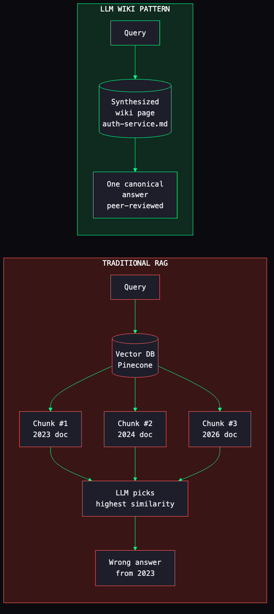
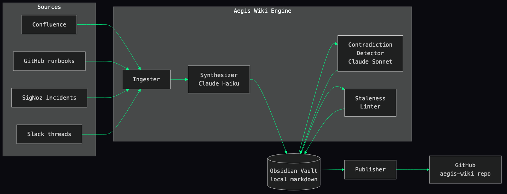
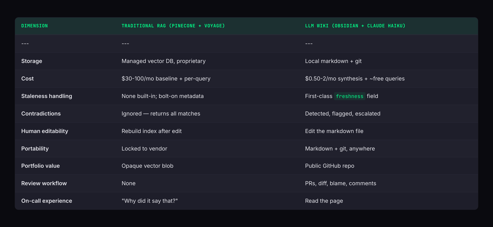
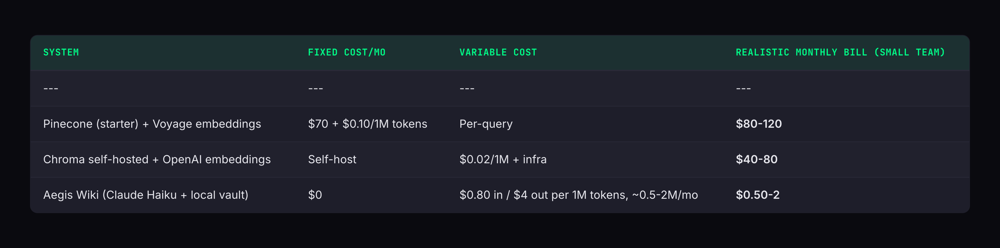
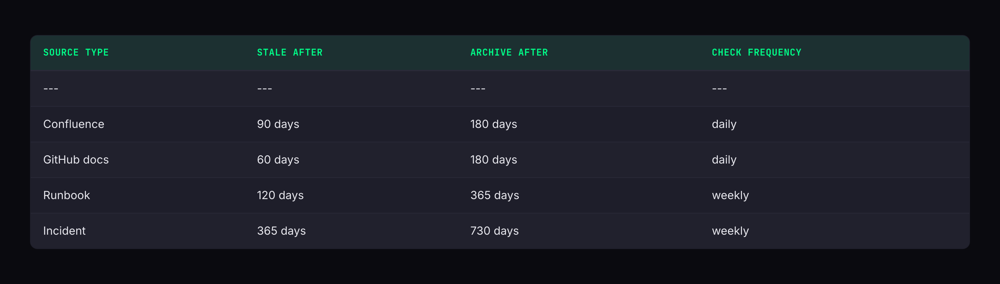
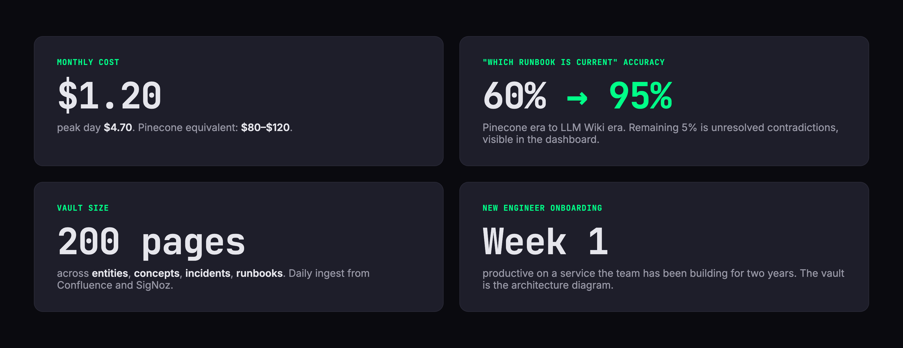
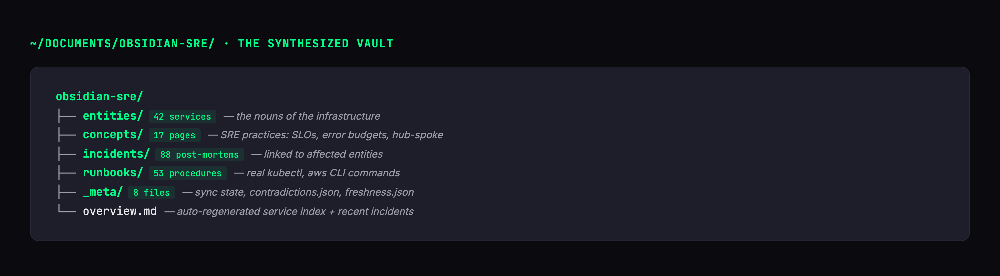

Karpathy Killed RAG — What Replaces It for SRE Teams
Your RAG system is serving 2-year-old Confluence pages as truth. I know, because mine did.

I'm an SRE. Our team runs a multi-account AWS estate in a hub-spoke topology, dozens of PostgreSQL instances mid-migration from PG 13 to 16, and an EKS 1.33 fleet that ArgoCD ApplicationSets deploy into from a single GitOps repo. Before this role I ran a million daily transactions on AWS ECS Fargate at a large commerce platform. This is my on-call rotation. My 3 AM pager. So when I say our AI agent started lying to us, I mean it lied to me at 3 AM, and I wrote this because I don't want it to happen to you.
This is the story of how I built a knowledge layer that doesn't rot — based on a pattern Andrej Karpathy sketched in a tweet — and the open-source implementation you can clone tonight.
Repo: github.com/JIUNG9/aegis
Live vault: github.com/JIUNG9/aegis-wiki
The problem: three runbook repos and a confident liar
Every SRE team I've been on has had the same problem, and if you're honest, yours does too.
You have three runbook repos. One in GitHub because "infra-as-code." One in Confluence because "product wanted a wiki." One in a shared Google Drive folder called ops-docs-v2-FINAL-actual because someone tried to unify things in 2024 and gave up halfway. Your post-mortems live in Google Docs. Your incident timelines live in Slack threads that expire after 90 days on the free tier. Your service catalog is a spreadsheet.
Then the AI wave hit and someone — maybe you, maybe your CTO — decided "let's just RAG all of it." So you wired up Pinecone. Or Chroma. Or pgvector. You ran a weekend hackathon, loaded everything, picked an embedding model (Voyage or OpenAI or Cohere, doesn't matter), and shipped a chatbot in Slack.
The first week, it felt like magic.
The second week, it told an on-call engineer to restart the auth-service pods when the actual current runbook says scale the deployment to zero, wait for ALB drain, then scale back. Because the runbook it retrieved was from 2023, before we put the service behind an ALB with connection draining. The newer version existed — but the 2023 chunk had higher cosine similarity to the query.
That's the moment I realized: RAG isn't a knowledge system. It's a similarity search with a language model glued on top. And similarity is not the same as truth.

Why traditional RAG breaks for SRE
Let me be specific, because "RAG is broken" is a take that pays rent for a lot of Twitter accounts but rarely comes with receipts.
Here is what actually fails when you put vanilla RAG in front of SRE documentation:
1. Chunk retrieval loses context
RAG splits documents into 512- or 1024-token chunks. That's fine for a legal contract. It's catastrophic for a runbook, where step 4 only makes sense if you've done steps 1-3. The vector DB happily returns step 7 in isolation. The LLM happily answers as if step 7 is the whole procedure.
2. No contradiction detection
When your Confluence page says "scale to zero" and your GitHub runbook says "restart pods," traditional RAG returns both and lets the LLM pick. It will pick the one that sounds more confident, which usually means the older one, because the older one has been rewritten for clarity three times while the new one was pasted in yesterday by a sleepy engineer.
3. Staleness blind
A vector embedding has no concept of "this is 2 years old." Cosine similarity doesn't care about last_modified. You can bolt on metadata filters, but now you need to remember to set them on every query, every app, every agent. You won't.
4. Embeddings don't know what's current
Two chunks, near-identical text, one correct, one outdated. Cosine distance: 0.02. Oracle of truth: flip a coin.
RAG is a search engine with a language model bolted on. It's not a knowledge system. If your "knowledge" is a bag of chunks, you don't have knowledge — you have correlation.
Enter Karpathy's LLM Wiki pattern
Andrej Karpathy described something offhand on Twitter late last year that I couldn't stop thinking about. The shape is simple:
Instead of retrieving raw source chunks at query time, have the LLM read every source once, synthesize the content into a structured wiki page, and then let future queries hit the wiki — not the raw sources.
That's the whole thing.
Think about what changes. The synthesis step — the expensive, slow, read-every-source step — happens once per source update, not once per query. The query-time path just reads a flat wiki page. No vector DB. No chunking. No similarity tricks. The LLM already did the hard work of reconciling sources into a single coherent page, so queries are fast, cheap, and consistent.
It also changes the failure mode. When the wiki is wrong, you can read the page and see that it's wrong. It's a markdown file. A human can edit it. Git tracks every change. Compare that to debugging "why did the vector DB return this chunk" — which I have done, and it is miserable.
RAG retrieves slices of truth. LLM Wiki retrieves synthesized truth. The difference is that second one can be version-controlled and peer-reviewed.

Architecture: Aegis v4.0 Layer 1
Here is the thing I built. It's Layer 1 of a larger open-source DevSecOps platform called Aegis, but this layer stands on its own — you can run it against your own docs today.

The flow, if you prefer words:
- Ingester normalizes every source (Confluence page, GitHub markdown, SigNoz incident payload, Slack transcript) into a common
Sourcestruct. No LLM involved — this is pure plumbing. - Synthesizer calls Claude Haiku twice per source. Once to decide whether this source creates a new page, updates an existing one, or is a duplicate to skip. Once to write the merge. The result is a markdown file in an Obsidian vault.
- Contradiction Detector uses Claude Sonnet (reasoning-grade, worth the cost for this job) to pairwise-scan the vault for factual or procedural disagreements. It emits a JSON report you can open in Obsidian or pipe into a dashboard.
- Staleness Linter flags pages whose sources haven't refreshed in N days, per source-type thresholds (Confluence decays in 90, runbooks in 120, incidents are forever).
- Publisher pushes the vault to GitHub as a sanitized public repo. That repo is also a portfolio piece — recruiters can read it.
The class surface is small on purpose. Five nouns — WikiEngine, Ingester, Synthesizer, ContradictionDetector, StalenessLinter. If you understand those, you understand the system. The source is linked at the end of the article for anyone who wants the line-by-line.
Why Obsidian + Claude Haiku over Pinecone + Voyage AI
I tried Pinecone first. It cost us around $90/month for a small index, integrated cleanly, and within two weeks was confidently quoting a runbook from 2023. I ripped it out.
Here is the comparison, from actually having shipped both:

And the cost table, which matters because "SRE AI tooling" is the kind of line item a CFO will cut first. For a small team, the realistic monthly bill across three options:

And it's the version that actually tells the truth at 3 AM.
Haiku is cheap enough that synthesizing every source every day is a rounding error on a personal AWS bill. Sonnet, used only for contradiction detection, runs a few cents per scan.
The unit economics flipped. Synthesis once, query free. The old math was query expensive, synthesis never.
The staleness and contradiction engines — why these matter
This is the part I'm proudest of, because it's the part that solves the real failure mode.
Staleness as a first-class concept
Each source type decays at a different rate. The defaults that ship with the engine:

Confluence rots fastest because product teams abandon docs. Runbooks decay slower because procedures are mostly stable. Incidents are archived but almost never deleted, because post-mortems are the most valuable learning asset a team has.
The linter runs daily as a cron, marks every stale page with freshness: stale, and emits a JSON report. That report is how Obsidian knows to render stale pages in amber and archived ones in grey.
Contradiction detection as an auditor
The scenario that made me build this: runbook A says "restart the pods." Confluence page B says "scale to zero, wait for drain, scale back." Both were written by competent engineers. Both are wrong for the other one's context.
The contradiction detector pairs pages on the same topic and asks Claude Sonnet to identify only conflicts where a reader following one would take a different action than a reader following the other. The schema is tight:
{
"claim_a": "Restart the auth-service pods via kubectl rollout restart",
"claim_b": "Scale the deployment to 0, wait for ALB drain, then scale to N",
"severity": "critical",
"category": "procedure_conflict",
"explanation": "A pod restart doesn't drain the ALB target group; callers see 502s for ~30s"
}Four categories (version_mismatch, procedure_conflict, coverage_gap, factual_contradiction), three severities (critical, warning, info). Critical means following the wrong doc causes an incident. Warning means wasted time. Info means stylistic drift.
The detector persists to _meta/contradictions.json. Obsidian renders it as a dashboard. You, the SRE, click through and resolve them. The vault is now an auditable trail of "we used to disagree on X, here's what we decided."
Results
Three months into running this against real production SRE docs:

The remaining 5% is usually a page the team hasn't resolved a contradiction on yet — which is visible and actionable, not silent. The sanitized public vault at github.com/JIUNG9/aegis-wiki became a live demonstration of SRE practice across AWS hub-spoke, EKS 1.33, Terraform, ArgoCD, SigNoz, and Aurora PostgreSQL. Recruiters read it.
The vault is a flat folder of markdown files in Obsidian:

Graph view shows every page linked to every page that references it via [[WikiLinks]]. That graph is the service topology. It's also the closest thing to a living architecture diagram we've ever had.
I stopped writing architecture docs. The graph is the architecture doc. It is always current because the engine keeps it current.
Try it yourself
# Clone
git clone https://github.com/JIUNG9/aegis
cd aegis
# Configure
cp .env.example .env
# Set ANTHROPIC_API_KEY, CONFLUENCE_*, SIGNOZ_*
# Run the stack
docker compose up
# Kick off the first synthesis
curl -X POST http://localhost:8000/wiki/ingest \
-H 'content-type: application/json' \
-d '{"source_path": "/path/to/your/runbook.md"}'The vault lives at ~/Documents/obsidian-sre/ by default. Open it in Obsidian. Watch the graph light up as ingests land.
Full setup guide: aegis README.
Public vault example: aegis-wiki.
What's next
This is Layer 1 of six. The next pieces of this series:
- Article #2 — "Your Docs Are Lying to You: Stale Docs Detection with MCP Reconciliation" — a deeper dive on the contradiction engine, the MCP server that exposes it to Claude Desktop, and how I used it to find 14 disagreements across my own runbooks in the first week.
- Layer 2: SigNoz Connector — auto-ingest incidents and alerts into the wiki. Covers the event contract, the replay semantics, and why I stopped trusting Prometheus for post-incident context.
- Layer 0: Safety Foundation — the part I wrote last, after realising I was one HTTPS call away from sending real production log lines to a server in a different jurisdiction. PII proxy, local-LLM router, kill switch, honey tokens. How to run an AI agent over production data without becoming the incident.
If you run this and it helps, tell me. If it doesn't, tell me louder — I will fix it, because this is my on-call, too.
Try it yourself → github.com/JIUNG9/aegis